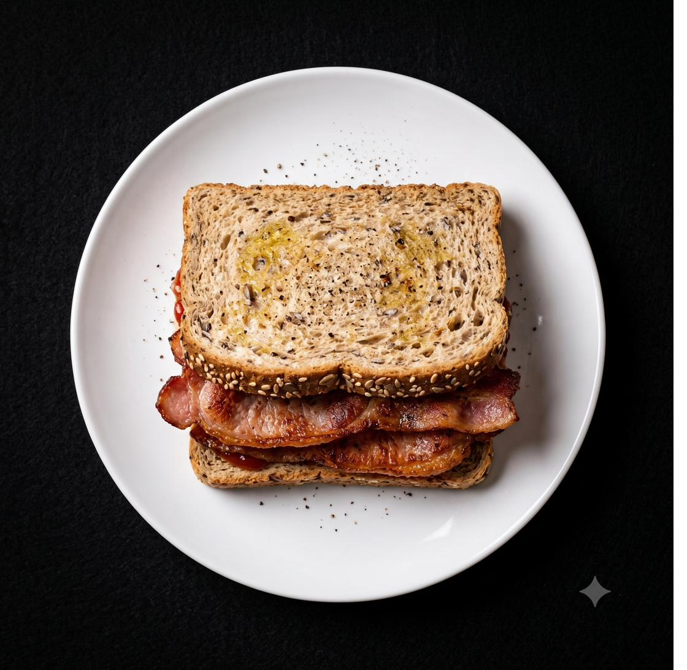
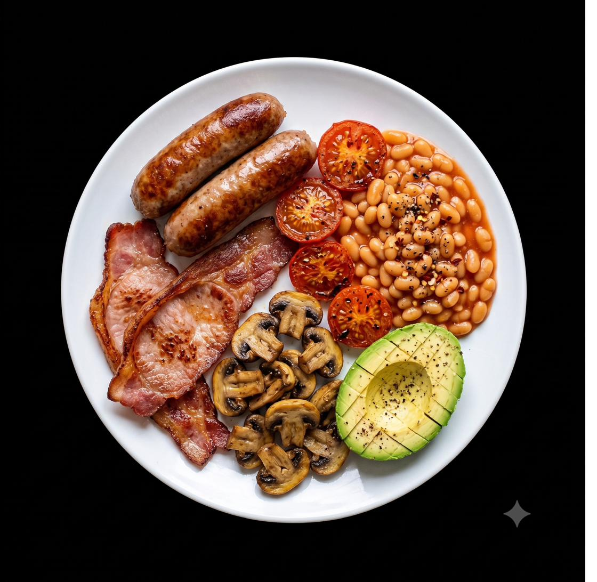
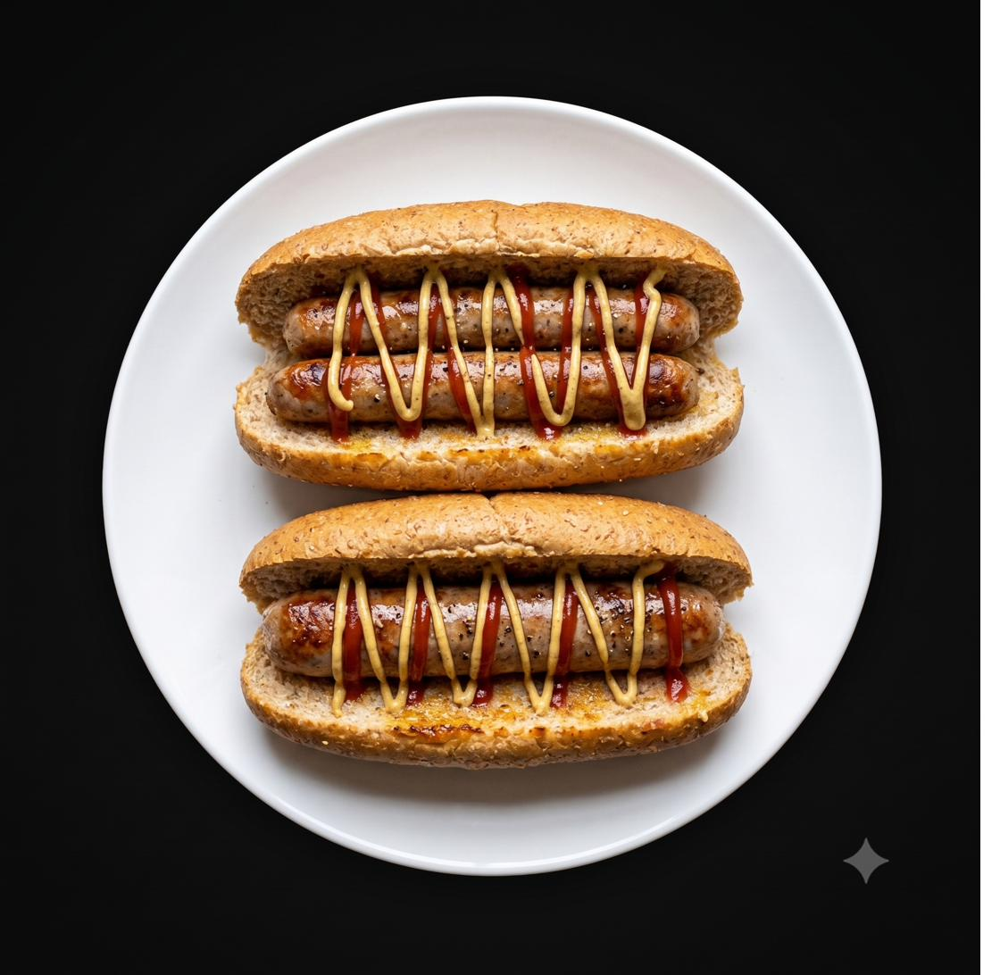
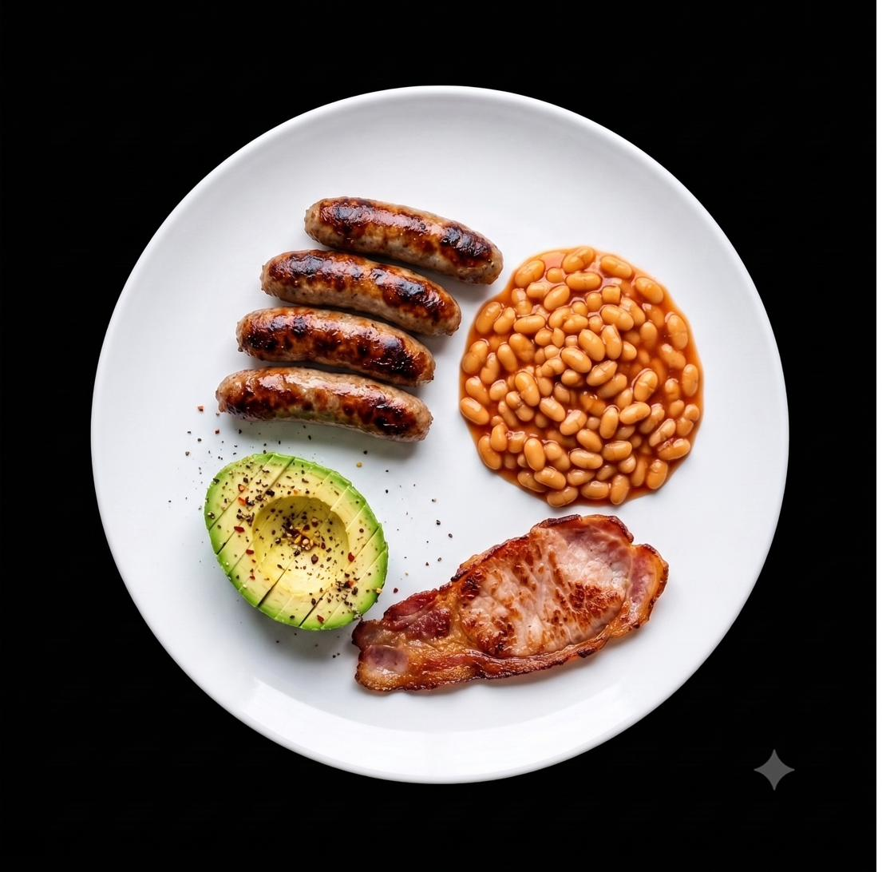
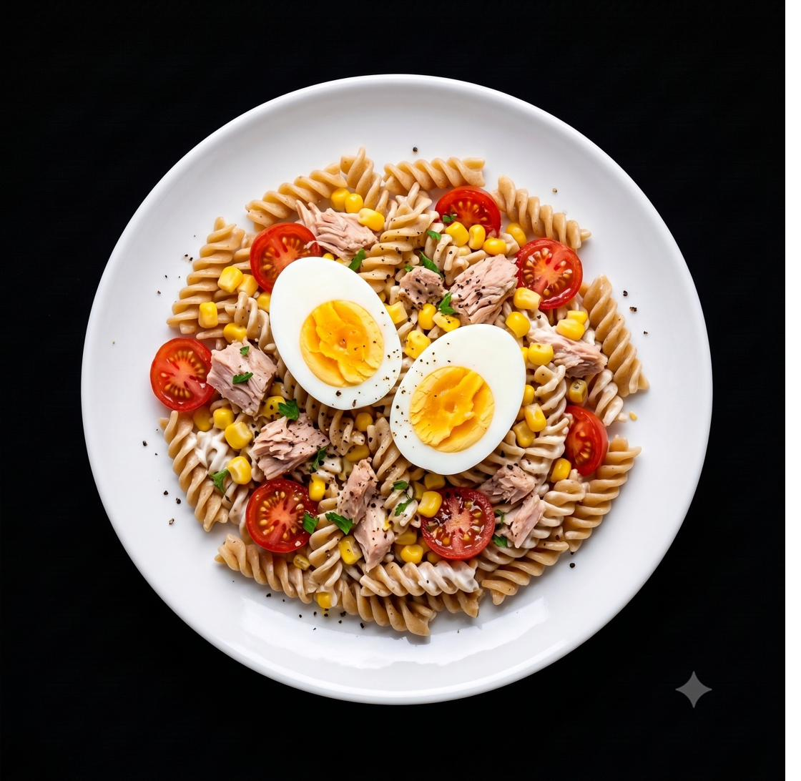

Bacon Sandwich
A high-protein, slow-release breakfast built to minimise glucose spikes. Seeded wholemeal bread, back bacon, and Kerrygold butter.

Full English
A full English rebuilt for insulin sensitivity — high protein, healthy fats, no bread, no black pudding, every ingredient chosen to keep your glucose curve flat.

Chipolata Hotdogs
High-protein, low-sugar hotdogs built for insulin sensitivity. Wholemeal rolls, 93% pork chipolatas, toasted in the sausage fat — no butter needed.

Full English — Chipolata Version
A full English rebuilt with chipolatas — high protein, healthy fats, no bread, no mushrooms or tomatoes. Every ingredient chosen to keep your glucose curve flat.

Tuna Pasta Salad
A high-protein, low-glycemic dinner built around wholewheat fusilli and tuna in spring water. Boiled eggs hit the calorie target through protein rather than more pasta.

Tuna Pasta Salad — Avocado Version
A blood sugar-friendly tuna pasta salad with avocado providing healthy fat and fibre in place of eggs. High protein, minimal sugar, no mayo.